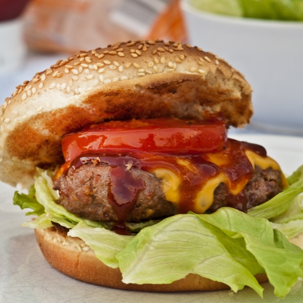

AI Image Generator
Convert your text to image using this AI Image Generator. This app will generate 4 images based on your input.


Convert your text to image using this AI Image Generator. This app will generate 4 images based on your input.
NOTE ! This project is in its Beta version, you may get some unrelated images on using complicated prompts,try to give simpler prompts.